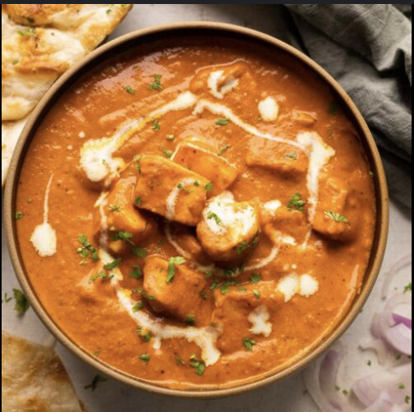

Paneer Butter Masala

Description
Paneer Butter Masala is a rich and creamy Indian curry made with
soft cubes of paneer (Indian cottage cheese) simmered in a buttery tomato
gravy.
It's mildly spiced and pairs beautifully with naan, roti, or rice.
Ingredients
- 200g paneer (cubed)
- 2 tbsp butter
- 2 tomatoes (pureed)
- 1 onion (finely chopped)
- 1 tsp ginger-garlic paste
- 1/2 tsp garam masala
- 1/2 tsp red chili powder
- 1/4 cup cream
- Salt to taste
Steps
- Heat butter in a pan and sauté onions until golden.
- Add ginger-garlic paste and cook briefly.
- Stir in tomato puree, chili powder, and garam masala; cook
until oil separates.
- Add cream and paneer cubes; simmer for 5 minutes.
- Serve hot with naan or steamed rice.
Back to Home